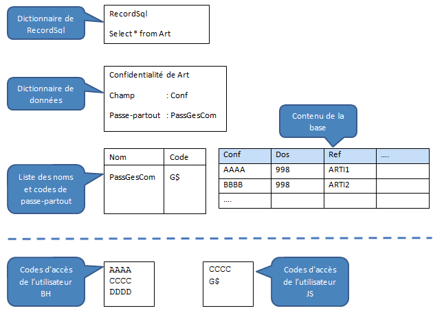

La gestion des tables confidentielles dans un RecordSql est automatiquement prise en compte. La confidentialité est traitée pour chaque ligne d’une table. Pour qu’un utilisateur ait accès à une ligne d’une table confidentialisée d’un RecordSQL, il doit posséder :
Soit le code d’accès correspondant au code de confidentialité de la ligne de la table.
Le code de confidentialité d'une ligne est stocké dans un champ de la table.
Soit un code d'accès particulier, appelé "code passe-partout", qui donne accès à toutes les lignes de la table.
Un "passe-partout" est défini dans les propriétés de la table dans le dictionnaire de données et le programmeur a la charge de faire l'association entre le "passe-partout" et le "code passe-partout" correspondant..
S’il n’y a pas de code de confidentialité associé à la table, l’accès à celle-ci est autorisé à tous. Le passe-partout associé à la table est facultatif. S’il n’y a pas de passe-partout, seul le code de confidentialité opère.
Fonctionnement
La confidentialité opère de manière différente selon la requête et s’il s’agit de la table de base d’un RecordSQL ou d’une table liée par une jointure.
Si l’accès à la ligne est refusé :
Pour la table de base
• Select initialise tous les champs du RecordSQL à espace.
• ReaderNext ignore la ligne et passe automatiquement à la ligne suivante.
Attention : RecordSQL.Exists ne tient pas compte des confidentialités, c'est à dire qu'une ligne peut exister même si elle ne peut pas être lue.
Pour les tables liées,
• Select et ReaderNext initialisent tous les champs de la table liée à espace.
• L'attribut GlobalConf=yes de la description de la jointure du RecordSql permet de modifier ce comportement pour ignorer les lignes pour lesquels l'utilisateur ne dispose pas des droits d'accès à la table liée.
Contrôle du droit d’accès à une table du RecordSQL
Si un "passe-partout" est associé à la table et si l’utilisateur dispose du "code passe-partout" correspondant, il a accès à toutes les lignes du RecordSQL.
Sinon, il a accès aux lignes du RecordSQL pour lesquelles il dispose du code d'accès correspondant.
Description dans le dictionnaire
Pour mettre en oeuvre la gestion des confidentialités, il faut garnir les deux propriétés suivantes dans la description de la table dans le dictionnaire de données :
Le nom du champ de la table contenant le code de confidentialité. C’est un champ alphanumérique de 4 caractères. Par convention, son nom est Conf.
Le passe-partout.
Constitution de la liste des passe-partout
La liste des passe-partout des tables de l'application doit être garnie avant le premier accès à un RecordSQL. Voir les fonctions ListPassKeyGet et ListPassKeySet.
Exemple

L'utilisateur BH peut lire la première ligne de la base puisqu'il dispose du code AAAA mais ne peut lire la seconde ligne puisqu'il ne dispose ni du code BBBB ni du passe-partout.
L'utilisateur JS peut lire toutes les lignes puisqu'il dispose du code d'accès G$ qui correspond au nom du passe-partout PassGesCom.